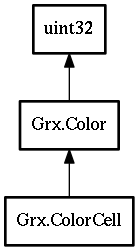

Grx.ColorCell – grx-3.0 Reference Manual
Packages
grx-3.0
Grx
ColorCell
alloc
@set
free
ColorCell
Object Hierarchy:

Description:
[
SimpleType
]
public
struct
ColorCell
:
Color
Namespace:
Grx
Package:
grx-3.0
Content:
Static methods:
public
static
ColorCell
alloc
()
Methods:
public
void
@set
(
uchar
r,
uchar
g,
uchar
b)
public
void
free
()
Inherited Members:
All known members inherited from struct Grx.Color
VALUE_MASK
MODE_MASK
BLACK
WHITE
NONE
value
mode
red
green
blue
build_rgb
build_rgb_round
build_grayscale
alloc
alloc_inline
alloc2
alloc2_inline
lookup
alloc_ega_colors
to_write_mode
to_xor_mode
to_or_mode
to_and_mode
to_image_mode
free
query
query_inline
query2
query2_inline